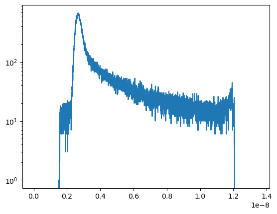

TTTR files¶
Reading¶
A TTTR file usually containts meta data stored in a header and a set of events that can for instance represent a set of sequentially detected photons. TTTR files are read by the tttrlib module which first needs to be imported.
[26]:
import tttrlib
Next, a TTTR object needs to be constructed. The TTTR object constructor can read the content of a tttr file. For that, the file name needs to be passed to the constructure. Moreover, the file type needs to be either provided or needs to be inferable. The file type is either specified by a number or by passing a string to the TTTR object’s constructor.
[27]:
ptu = tttrlib.TTTR('./tttr-data/pq/ptu/pq_ptu_hh_t3.ptu', 0) # i) specify type by ID
ptu = tttrlib.TTTR('./tttr-data/pq/ptu/pq_ptu_hh_t3.ptu', 'PTU') # ii) specify type by name
File types, identifier and and the corresponding names are listed below. File types that where the reading routine needs to be specified are marked with an x.
Table of supported file types and corresponding identifiers
File type |
Number |
Identifier |
Required |
|---|---|---|---|
PicoQuant, PTU |
0 |
‘PTU’ |
|
PicoQuant, HT3 |
1 |
‘HT3’ |
|
Becker&Hickl, SPC130 |
2 |
‘SPC-130’ |
x |
Becker&Hickl, SPC630-256 |
3 |
‘SPC-630-256’ |
x |
Becker&Hickl, SPC630-4096 |
4 |
‘SPC-630-4096’ |
x |
Photon-HDF5 |
5 |
‘PHOTON-HDF5’ |
A TTTR file represents a collection of events with corresponding event records. Different file types use different encodings for events and require thus different reading routines.
Record type |
Number |
Supported container |
|---|---|---|
PQ_RECORD_TYPE_HHT2v2 |
1 |
PTU, HT2 |
PQ_RECORD_TYPE_HHT2v1 |
2 |
PTU, HT2 |
PQ_RECORD_TYPE_HHT3v1 |
3 |
PTU, HT3 |
PQ_RECORD_TYPE_HHT3v2 |
4 |
PTU, HT3 |
PQ_RECORD_TYPE_PHT3 |
5 |
PTU, HT3 |
PQ_RECORD_TYPE_PHT2 |
6 |
PTU, HT2 |
BH_RECORD_TYPE_SPC130 |
7 |
SPC |
BH_RECORD_TYPE_SPC600_256 |
8 |
SPC |
BH_RECORD_TYPE_SPC600_4096 |
9 |
SPC |
For certain file types details on the TTTR record types can be determined the record type can be infered. Such files can be read without providing the type.
[24]:
ptu = tttrlib.TTTR('./tttr-data/pq/ptu/pq_ptu_hh_t3.ptu') # iii) infer type
Other file types require to specify the reading routing, as different file types use the same file ending and the file type cannot be infered. A TTTR object that contains the data in a TTTR file can be initialized by the filename and the data type as specified in above. Both Alternatively, TTTR objects are initialized by the filename and the file type identifier as displayed in the table above. Both approaches are equivalent and demonstrated for the Becker&Hickl SPC-130 and the PicoQuant PTU
file supplied in the example folder in the Python code below. If the container type is not specified tttrlib will try to infer the container type based on the file extension.
SPC files require information on the file type.
[25]:
spc132 = tttrlib.TTTR('./tttr-data/bh/bh_spc132.spc', 2)
spc132 = tttrlib.TTTR('./tttr-data/bh/bh_spc132.spc', 'SPC-130')
TTTR objects can be also be created withou data. On application for empty TTTR container are cases where multiple experiments are integrated / combined.
Header¶
Example how to read and write header
Operations¶
[ ]:
import tttrlib
data = tttrlib.TTTR('./tttr-data/bh/bh_spc132.spc', 'SPC-130')
Slicing¶
New TTTR objects can be created by slicing existing objects, if you are interested a subset of the data.
[23]:
import tttrlib
data = tttrlib.TTTR('./tttr-data/bh/bh_spc132.spc', 'SPC-130')
data_sliced = data[:10]
print("Number of events in file:", len(data))
print("Number of events in selection:", len(data_sliced))
Number of events in file: 183657
Number of events in selection: 10
A slice of a TTTR object creates a copy, i.e., the routing channel, the macro, and the micro times are copied including the header information.
Joining TTTRs¶
TTTR objects can be joined either by the append method or by using the + operator.
[ ]:
data = tttrlib.TTTR('./tttr-data/bh/bh_spc132.spc', 'SPC-130')
d2 = data.append(
other=data,
shift_macro_time=True,
macro_time_offset=0
)
[ ]:
d3 = data + data
len(d2) == 2 * len(data)
len(d3) == len(d2)
If shift_macro_time is set to True, which is the default, the macro times of the data that are offset by the last macro time record in the first set in addition to the value specified by macro_time_offset. The parameter macro_time_offset is set to zero by default.
By appending TTTR objects to each other data that is splitted into multiple files can be joined into a single TTTR object as follows
[ ]:
import os
files = glob.glob('./data/bh/bh_spc132_smDNA/*.spc')
sorted(glob.glob('*.spc'), key=os.path.getmtime)
data = tttrlib.TTTR(files[0], 'SPC-130')
for d in files[1:]:
data.append(tttrlib.TTTR(d, 'SPC-130'))
In practice, take care that the files are ordered. The code above stiches the objects in the order as returned by the
globmodule. The glob module finds all the pathnames matching a specified pattern according to the rules used by the Unix shell, although results are returned in arbitrary order. Hence, we sort the data by creating time first. In case you need another ordering, e.g., lexical ordering adapt the code.
[ ]:
shift_macro_time
get_used_routing_channels
Attributes¶
Microtime histograms¶
[16]:
import tttrlib
import matplotlib.pylab as plt
[17]:
data = tttrlib.TTTR('./tttr-data/bh/bh_spc132.spc', 'SPC-130')
y, x = data.microtime_histogram
plt.semilogy(x, y)
[17]:
[<matplotlib.lines.Line2D at 0x7ff430ce6820>]

[18]:
y, x = data.get_microtime_histogram(8)
plt.semilogy(x, y)
[18]:
[<matplotlib.lines.Line2D at 0x7ff430b4b190>]

Selections¶
A defining feature of TTTR data is that subsets can be selected and defined for more detailed analysis. This is for instance exploited in single-molecule experimetns There are different methods to access subsets of a TTTR object that are described in this section.
Using selections¶
There is a set of functions and methods to select subsets of TTTR objects. Beyond the the array processing capabilities either provided by the high-level programming language or an library like NumPy <http://www.numpy.org/>_, tttrlib offers a set of functions and methods to select a subset of the data contained in a TTTR file. There are two options to get selection for a subset of the data
1. By *ranges*
2. By *selection*
Ranges are lists of tuples marking the beginning and the end of a range. Selections are list of integers, where the integers refer to the indices of the event stream that was selected.
For instance, for the sequence of time events displayed in the following table
index |
0 |
1 |
2 |
3 |
4 |
5 |
6 |
7 |
8 |
9 |
time |
1 |
12 |
13 |
14 |
15 |
18 |
20 |
23 |
30 |
32 |
the selection (1, 3, 5, 7) yields:
::
12, 14, 18, 23
and the ranges (0, 2) and (7, 9) yield:
::
(1, 12, 13), (23, 30, 32)
Depending on the specific application either ranges or selections are more useful. For instance, single molecule bursts are usually defined by ranges, while detection channels are usually selected by selections.
Channel selections¶
A very typical use case in TCSPC experiments (either in fluorescence lifetime microscopy (FLIM) or multiparameteric fluorescence detection (MFD)) is to select a subset of the registered events based on the detection channel. The experimental example data provided by the file ./examples/bh/bh_spc132.spc four detectors were used to register the fluorescence signal with two polarizations in a ‘green’ and ‘red’ spectral range. In the example file the detector numbers for the green fluorescence
were (0, 8) and (1, 9) for the red detection window.
The method ‘get_selection_by_channel’ provides an array that contains the indices of the events when a the channel equals the channel number of the provided arguments. To obtain the indices where the channel number. In the example below the indices of the green (channel = 0 or channel = 8) and the indeces of the red (channel = 1 or channel = 9) are saved in the variables green_indices and red_indices, respectively.
import numpy as np
import tttrlib
data = tttrlib.TTTR('./examples/bh/bh_spc132.spc', 'SPC-130')
green_indices = data.get_selection_by_channel([0, 8])
red_indices = data.get_selection_by_channel([1, 9])
This examples needs to be adapted to the channel assignment dependent on the actual experimental setup.
Selections can be made by channel with such a selection a new TTTR object can be created.
data = tttrlib.TTTR('./data/bh/bh_spc132.spc', 'SPC-130')
ch1_indeces = data.get_selection_by_channel([8])
data_ch1 = tttrlib.TTTR(data, ch1_indeces)
# alternatively
data_ch1 = data[ch1_indeces]
The TTTR object can be operated on normally.
Count rate selections¶
Another very common selection is based on the count rate. The count rate is determined by the number of detected events within a given time window. The selection by the method get_selection_by_count_rate returns all indices where less photons were detected within a specified time window. The time window is given by the number of macro time steps.
import numpy as np
import tttrlib
data = tttrlib.TTTR('./examples/bh/bh_spc132.spc', 'SPC-130')
cr_selection = data.get_time_window_ranges(1, 30)
In the example shown above, the time window is 1200000 and 30 is the maximum number of photons within that is permitted in a time window.
Such count rate selections are for instance used to detect bursts in single molecule experiments or to generate filters for advanced FCS analysis :cite:laurence2004 (see also :ref:Correlation:Count rate filer and :ref:Single Molecule:Burst selection).
TTTR ranges¶
Compute mean fluorescence lifetimes shift_macro_time get_used_routing_channels Compute mean fluorescence lifetimes
Writing TTTR-files¶
TTTR objects can be writen to files using the method write of TTTR objects.
import tttrlib
data = tttrlib.TTTR('./data/bh/bh_spc132.spc', 'SPC-130')
data_sliced = data[:10]
output = {
'filename': 'sliced_data.spc'
}
data_sliced.write(**output)
This way, as shown above, data can be sliced into pieces or converted into other data types.
[2]:
import tttrlib
import json
data = tttrlib.TTTR('./tttr-data/bh/bh_spc132.spc', 'SPC-130')
header = data.header
header.tttr_container_type = 0 # PTU
header.tttr_record_type = 4 # PQ_RECORD_TYPE_HHT3v2
header_dict = {
"tags": [
{"name": "MeasDesc_BinningFactor",
"idx": -1,
"type": 268435464,
"value": 1
},
{"name": "TTResultFormat_BitsPerRecord",
"idx": -1,
"type": 268435464,
"value": 1
},
{
"idx": -1,
"name": "MeasDesc_Resolution",
"type": 536870920,
"value": 3.2958984375e-12
},
{
"idx": -1,
"name": "MeasDesc_GlobalResolution",
"type": 536870920,
"value": 1.35e-08
},
{
"idx": -1,
"name": "TTResultFormat_BitsPerRecord",
"type": 268435464,
"value": 32
},
{
"idx": -1,
"name": "TTResultFormat_TTTRRecType",
"type": 268435464,
"value": 0x00010304 # rtHydraHarpT3
}
]
}
[3]:
header.json = json.dumps(header_dict)
[ ]:
ptu_file = 'spc_data_converted.ptu'
data.write(ptu_file)
[4]:
data_ptu = tttrlib.TTTR(ptu_file)
---------------------------------------------------------------------------
NameError Traceback (most recent call last)
Cell In[4], line 1
----> 1 data_ptu = tttrlib.TTTR(ptu_file)
NameError: name 'ptu_file' is not defined
A TTTR object that was created for instance from a SPC file can be saved as PTU file. For that the header information from a PTU file need to be provided when writing to a file.
When a TTTR file is writen to another format certain meta data need to be provided. The combination of tttr_container_type and tttr_record_type determines of the header determines the ouput format of the TTTR writer method.
For PTU files at least the instrument and the measurement mode (T2, T3) need to be provided.
#define rtPicoHarpT3 0x00010303 // (SubID = $00 ,RecFmt: $01) (V1), T-Mode: $03 (T3), HW: $03 (PicoHarp)
#define rtPicoHarpT2 0x00010203 // (SubID = $00 ,RecFmt: $01) (V1), T-Mode: $02 (T2), HW: $03 (PicoHarp)
#define rtHydraHarpT3 0x00010304 // (SubID = $00 ,RecFmt: $01) (V1), T-Mode: $03 (T3), HW: $04 (HydraHarp)
#define rtHydraHarpT2 0x00010204 // (SubID = $00 ,RecFmt: $01) (V1), T-Mode: $02 (T2), HW: $04 (HydraHarp)
#define rtHydraHarp2T3 0x01010304 // (SubID = $01 ,RecFmt: $01) (V2), T-Mode: $03 (T3), HW: $04 (HydraHarp)
#define rtHydraHarp2T2 0x01010204 // (SubID = $01 ,RecFmt: $01) (V2), T-Mode: $02 (T2), HW: $04 (HydraHarp)
#define rtTimeHarp260NT3 0x00010305 // (SubID = $00 ,RecFmt: $01) (V2), T-Mode: $03 (T3), HW: $05 (TimeHarp260N)
#define rtTimeHarp260NT2 0x00010205 // (SubID = $00 ,RecFmt: $01) (V2), T-Mode: $02 (T2), HW: $05 (TimeHarp260N)
#define rtTimeHarp260PT3 0x00010306 // (SubID = $00 ,RecFmt: $01) (V1), T-Mode: $02 (T3), HW: $06 (TimeHarp260P)
#define rtTimeHarp260PT2 0x00010206 // (SubID = $00 ,RecFmt: $01) (V1), T-Mode: $02 (T2), HW: $06 (TimeHarp260P)
#define rtMultiHarpNT3 0x00010307 // (SubID = $00 ,RecFmt: $01) (V1), T-Mode: $02 (T3), HW: $07 (MultiHarp150N)
#define rtMultiHarpNT2 0x00010207 // (SubID = $00 ,RecFmt: $01) (V1), T-Mode: $02 (T2), HW: $07 (MultiHarp150N)
The types of the meta data follows the PTU file convention.
#define tyEmpty8 0xFFFF0008
#define tyBool8 0x00000008
#define tyInt8 0x10000008
#define tyBitSet64 0x11000008
#define tyColor8 0x12000008
#define tyFloat8 0x20000008
#define tyTDateTime 0x21000008
#define tyFloat8Array 0x2001FFFF
#define tyAnsiString 0x4001FFFF
#define tyWideString 0x4002FFFF
#define tyBinaryBlob 0xFFFFFFFF
Writing manually correct and functional header files can be tedious. Hence tttrlib offers the option to use header information and headers of other TTTR files.
import tttrlib
data = tttrlib.TTTR('./data/bh/bh_spc132.spc', 'SPC-130')
ptu_header = tttrlib.TTTRHeader('./data/pq/pq_ptu_hh_t3.ptu')
output = {
'filename': 'spc_data_converted.ptu',
'header': ptu_header
}
data.write(**output)
The different TTTR container formats are not fully compatible. Hence, it can happen that certain information that is for instance stored in the header is lost when converting and saving data. For instance, BH 130 SPC files can hold up to 4096 micro time channels, while PQ-PTU files hold up to 32768 micro time channels.
[ ]: